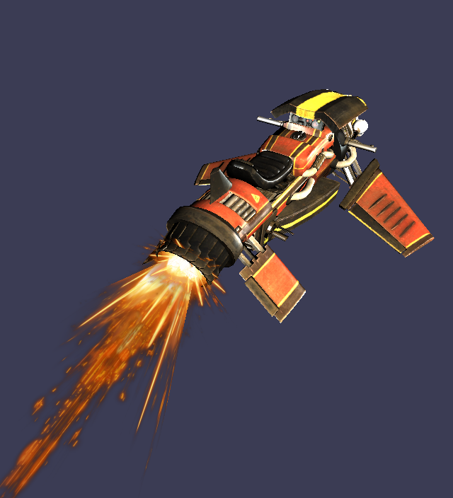
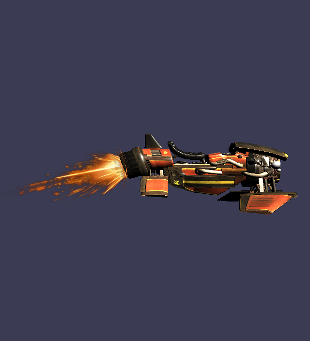

CPU & GPU Rasterizer

The goal for this project was to be able to seamlessly render the scene on the GPU and then switch to rendering on the CPU. Toggling between GPU and CPU by the click of a button. This project was done using the Effects shader system from DirectX.
-
What the Rasterizer can do
- Triangle Mesh Rasterizing
- Camera, dynamic movement with keyboard & mouse, adjustable FOV
- Runtime render-mode change from CPU to GPU (switch from Right handedness to Left handedness)
- Transparency(not entirely implemented on CPU-Rasterizer)
- Cycle Sampling state: Point, Linear, Anisotropic (only GPU)
- Cycle Cullmodes: None, Front-Face and Back-Face Culling
- Multiple texture types: Diffuse, Normal, Glossiness & Specular
- Toggling the use of the different texture maps(CPU only)
- Cycle Scenes if multiple are added
- Turntable
- Frustrum culling

